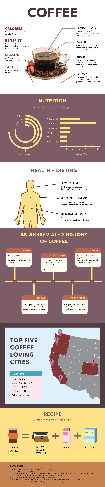
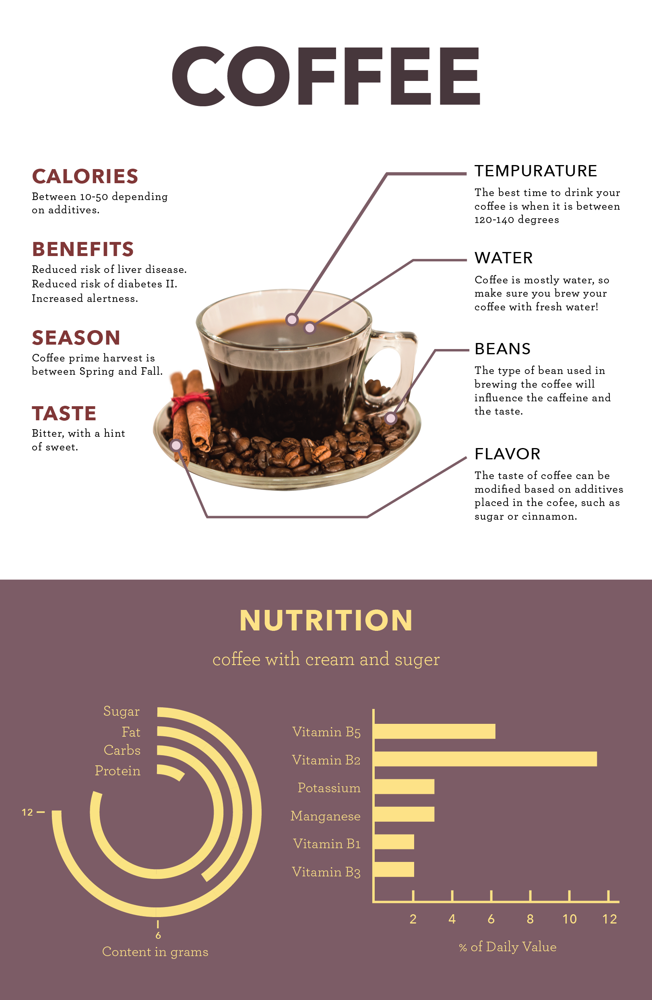
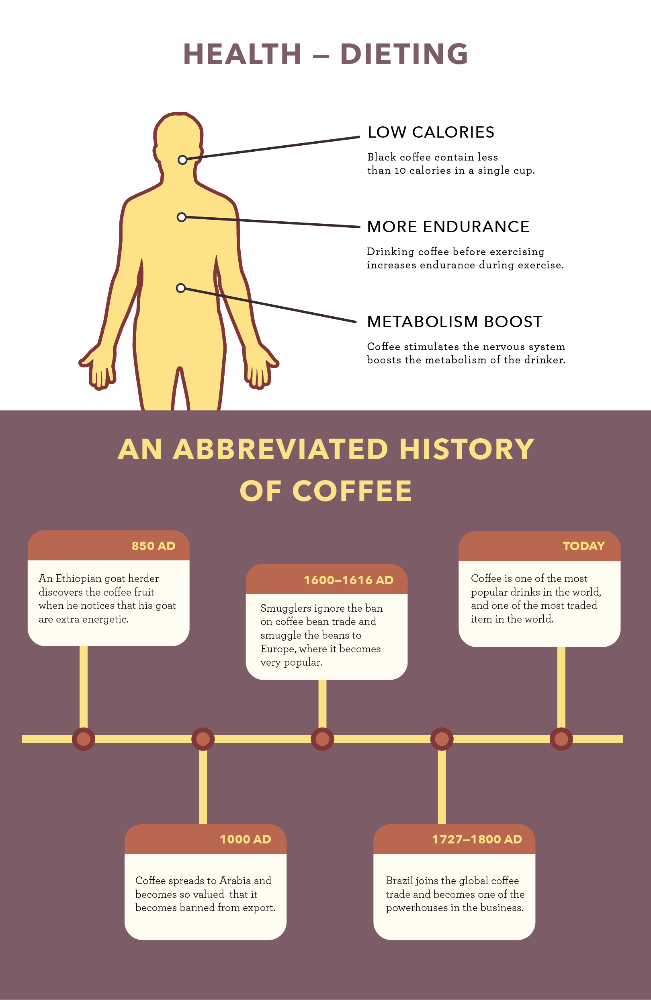

- Role
- Graphic Designer
- Duration
- Two Weeks
- Tools
- Photoshop
- Illustrator
Coffee Infographic
New York City is an extremely language-diverse city—over 200 languages are spoke here. Whilst there are services that are available in many of those languages, many others are only available in English. This can prove to be challenging for residents’ languages don’t include English. One way residents solve this problem is by asking for language help from friends, family, and close neighbors, but often times, this can be a very unclear process of searching for someone who both has the time and ability to help.


